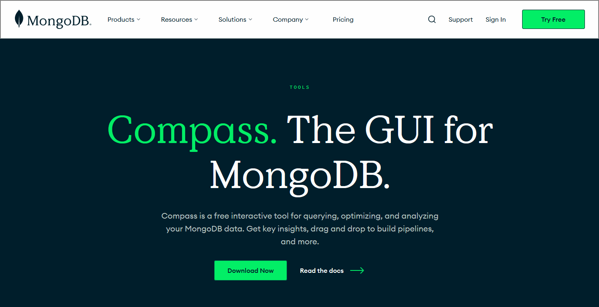
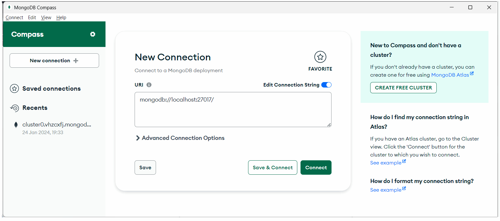
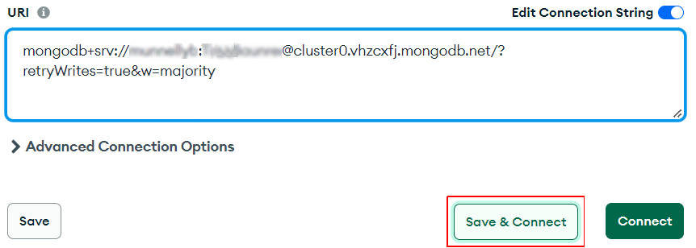
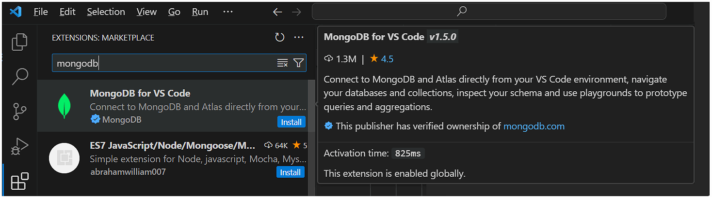
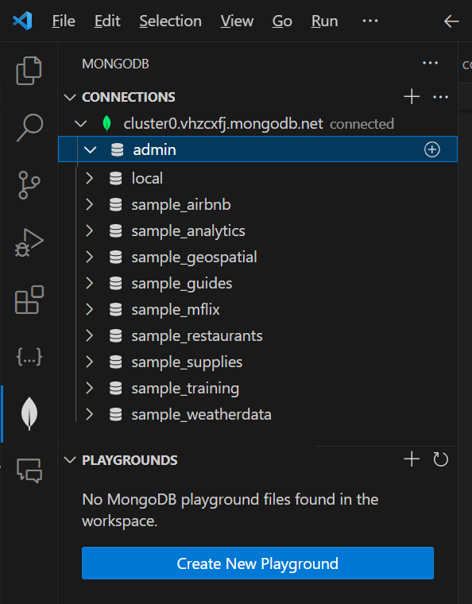

Learning Goals
At the end of this Tutorial, you will be able to:
- Download the free MongoDB Compass app to your local machine.
- Connect MongoDB Compass to your MongoDB Atlas account using the provided connection string.
- Installing the VS Code extension for MongoDB Atlas.
About MongoDB Compass
Compass is a free interactive tool for querying, optimizing, and analyzing your MongoDB data. Compass provides features such as schema visualization, sophisticated querying abilities, real-time performance metrics, and aggregation pipelines.
Compass is available for Windows, Mac, and Linux.
Installing MongoDB Compass
There are three versions of Compass: a full version with all features, a read-only version, and an isolated edition. You will want to install the full version. Follow the steps below:
- Go to the Compass Downloads page on the MongoDB website.
- Download the appropriate version for your machine.
- Follow the installation instructions.
Once installed, Compass launches and prompts you to configure privacy settings and specify update preferences.
Connecting Compass to MongoDB Atlas
After installing and launching Compass on your local machine, follow these steps to connect it to your account on MongoDB Atlas:
- When you launch Compass, you will see a screen similar to the following. 
- In the URI field, paste in your connection string and click the Save & Connect button.  You obtained your connection string in a previous Tutorial.
- Next, you are prompted to give a Name and Color to your saved connection.
 When finished, click the Save & Connect button.
When finished, click the Save & Connect button. - You are now shown a screen that lists in the left the MongoDB Altas databases you have access to.
 If this is your first time using Compass, you will see only the sample databases provided for you to experiment with.
If this is your first time using Compass, you will see only the sample databases provided for you to experiment with.
If you click on any of the sample databases, you will see a screen similar to the following. This lists the collections in the selected database and a range of options for working with them.

Installing the VS Code extension for MongoDB Atlas
Microsoft Visual Studio Code offers a helpful extension for working with MongoDB. Follow these steps to install and connect it:
- In VS Code, in the Activity Bar, click the Extensions icon.
- In the Extensions list displayed, type mongodb. 
- Install the extension.
Your next task is to connect the extension to your MongoDB Atlas account. Here are the steps:
- In the Activity Bar, click the MongoDB icon.

- Click the + icon to Add MongoDB Connection.
- In the Connect with Connection String box, click the Connect button.
- In the input area at the top of the screen, paste in your connection string and press ENTER.
If your connection is successful, the MongoDB extension pane will look similar to the following.
